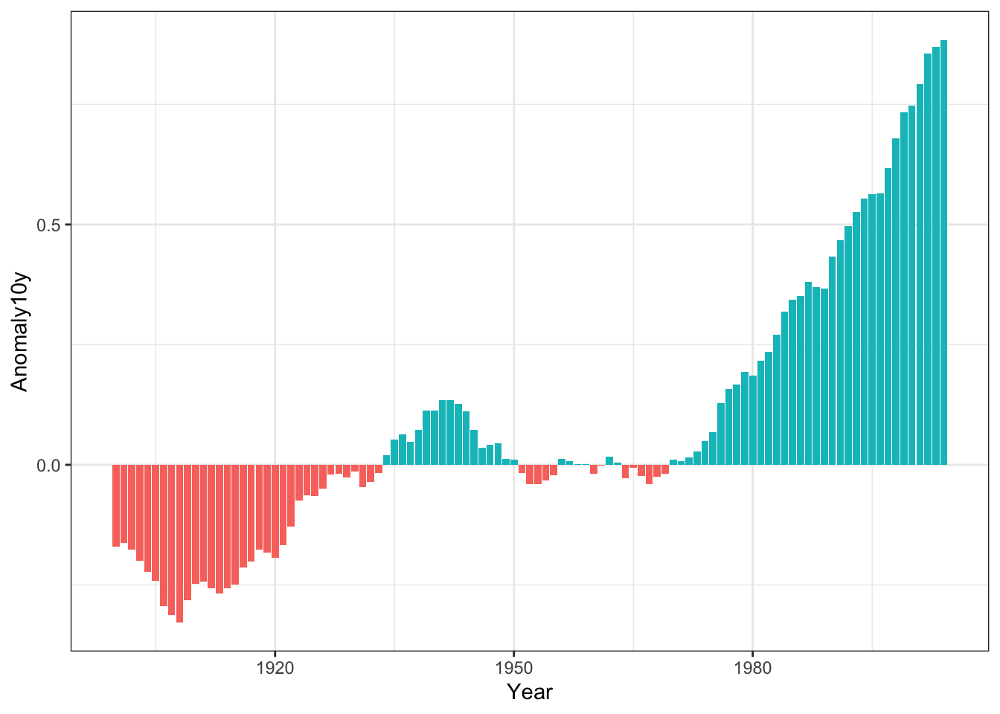

library(ggplot2)
library(gcookbook)
library(dplyr)
Attaching package: 'dplyr'The following objects are masked from 'package:stats':
filter, lagThe following objects are masked from 'package:base':
intersect, setdiff, setequal, unionclimate_sub <- climate |>
filter(Source == 'Berkeley' & Year >= 1900) |>
mutate(pos = Anomaly10y >= 0)
ggplot(climate_sub, aes(x = Year, y = Anomaly10y, fill = pos)) +
geom_col(position = 'identity', show.legend = F) +
theme_bw()